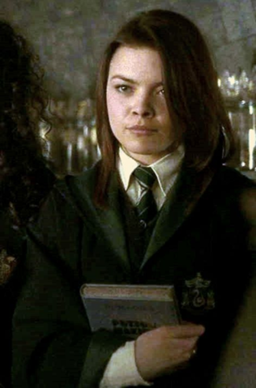

Pansy Parkinson was a witch in Harry Potter's year at Hogwarts School of Witchcraft and Wizardry. She was sorted into Slytherin house and in her fifth year became a prefect along with her fellow student and friend, Draco Malfoy. In the same year, she became one of the members of the short lived Inquisitorial Squad. When the final battle of the Second Wizarding War began at Hogwarts, Pansy spoke up in favour of turning Harry over to Lord Voldemort, only to have many of her schoolmates draw their wands upon her in Harry's defence.